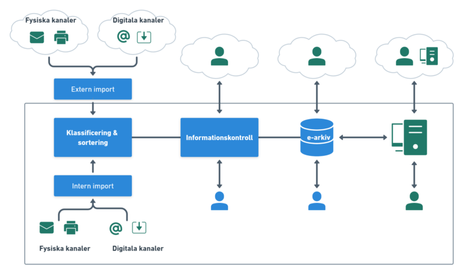

Produkter & lösningar
Vi levererar informationslösningar som bygger på produkter och komponenter inom digitalisering, AI,
texttolkning,
e-arkiv och återsökning av data. Samtliga komponenter i våra lösningar kommer från noga utvalda leverantörer
och
innefattas av högsta grad av tillförlitlighet och säkerhet.
Vi erbjuder både installerade lösningar samt Moln/SaaS-baserade lösningar. Våra molnlösningar erbjuder högsta
säkerhetsklass både vad gäller fysisk och digital säkerhet där all datatransport och lagring sker inom
Sveriges gränser
och ingen data lämnar landet.
Vårt erbjudande inkluderar även kompletterande tjänster, såsom aktiv förvaltning och löpande utveckling av
våra kunders
systemmiljö. Detta ger oss möjligheten att agera proaktivt i ett tätt samarbetet med kunden och löpande
införa
förbättringar i flödet mellan olika systemkomponenter, för att effektivisera användning av systemstödet.
Flera av våra systemlösningar och produkter kan avropas genom Kammarkollegiets ramavtalsområde Programvaror och tjänster
- Informationsförsörjning och Programvarulösningar.
Tillämpningar

Vi har ett brett utbud av tillämpningar som vi erbjuder våra kunder. Nedan följer korta beskrivning av
implementationer
som används av våra kunder idag.
Vår målsättning är att kunna erbjuda våra kunder en helhetslösning som inbegriper en säker och effektiv hantering av
deras informationsflöde, oberoende av vilken typ av information de behandlar och vilken verksamhet de bedriver.
Har Ni särskilda behov eller vill ni veta mer? Maila
oss!
Avställda system
Att ställa av äldre system är viktigt både av säkerhetsmässiga och ekonomiska skäl och följaktligen
hjälper vi
våra
kunder med
lagring och säker åtkomst till avställd information och äldre system. Oberoende vilket system som
skall
tas ner och
stängas av.
Informationen som finns i gamla system går inte alltid att migrera rakt av till ett nytt system, ibland
finns heller
inget system tillgängligt som skall ersätta det gamla fullt ut. Oavsett situation så behöver man kunna
arkivera det
gamla systemet material men ändå ha möjligheten att återsöka informationen på ett strukturerat och
kontrollerat sätt.
Vid migrering av äldre system använder vi därför olika tillvägagångssätt, inklusive kombinationer av
olika tekniker. Om
tillgång till metadata finns, så migrerar vi metadata och tillhörande filer utefter behov och krav. Om
tillgänglig
metadata saknas eller är inkomplett, så kan vi textindexera samtliga filer genom vår
fulltext-indexeringstjänst. Detta
ger då möjligheten att återsöka materialet genom att söka efter specifik text och/eller kombinationer av
ord.
Avtalshantering
Vår uppskattade helhetslösning för att hantera alla typer av organisationens avtal. Innefattar både
funktioner för
e-signering och digitalt arkivering av era avtal, liksom automatiska påminnelser och regelverk,
livscykelhantering samt
gallring.
Avtalshantering inkluderar både funktioner för digital signering enligt eIDAS regelverk med verifiering
mot extern
kunddata, samt bakomliggande lagring i GDPR- och OAIS kompatibelt e-arkiv.
Lösningen levereras antingen som moln- eller hybridtjänst, där digital signering sker via befintlig
molntjänst och
e-arkivet kan vara installerat i kundens egna infrastruktur, eller i molnlösning där all data lagras och
transporteras
inom Sveriges gränser. Lösningen håller ordning på personuppgifter, följer regelverken som finns för
GDPR
och utbyter
information med andra system och tjänster via befintligt RestAPI och vidaretransporterar data/filer till
övriga interna
och externa verksamhetssystem.
Digitalisering av material och processer
Har ni behov av att digitalisera fysiskt material, och samtidigt effektivisera era manuella
dokumentprocesser? Vi har
lösningar och tjänster som förenklar processen omkring digitalisering och hantering av ert
informationsflöde.
Vi hjälper både mindre som stora organisationer med övergången från fysiskt material till digitala
processer och digital
arkivering. Vi tar hand om både strukturerad och ostrukturerat data i diverse fysiska format såsom
papper,
mikrofilm,
bilder, mikrofiche etc. och omvandlar det till elektroniska informationsbärare och automatiserade
processer. Antingen
som tjänst eller genom leverans av systemlösningar, utefter som passar er och er situation bäst.
Fondförvaltning
Vi stödjer fondförvaltare med ett specifikt arbetsflöde där man hanterar byten och ändringar i
fondförvaltningen. Denna
tillämpning är mer av traditionell ärendehantering, där fondärenden utföres av handläggare och
och viktiga statusändringar i ärendet flaggas. Ofta innefattar arbetsflödet en stor mängd olika dokumenttyper som
behöver lagras och hanteras på ett processmässigt korrekt sätt.
Vi ser bl.a. till att hantera dokumenttyper som adressändring, Autogiroanmälan/Medgivande, Ändring autogirouppdrag,
Andelsbevis, Best av årsbesked/Kontouttag, Boknings AVI, Byte av org.nummer, Byte av clearing, Dispositionsrätt,
Gåvobrev, Ändring automatisk dragning, Ansökan om fondkonto, Rättelse, överlåtelse av andelar, Incidentrapporter,
Köp/Inlösen/Fondbyte, Makulering av order, Makulering av överlåtelse, Order, Personnummerändring, Rabatt,
Reconciliation, Rättelse, Signaturlista, Skatteskyldighet, Spärr av andelar/Spärrhävning, Teckning, Transfer
Bekräftelse, Transfer Uppdrag, Utredning, Vändningsaffärer, Återsökning och Överföring
Fysisk lagring
I det fall ni har behov av lagring och tillgång till de fysiska dokument som ni hanterar via våra
digitala
tjänster så
erbjuder vi både kort- och långtidsförvaring, med anpassade nivåer av gallrings- och
remitteringsupplägg.
Vi erbjuder tjänsten via våra samarbetspartners som har lång erfarenhet inom området, arkivering sker i deras fysiskt
säkrade lokaler där respektive kunds material arkiveras på specifik plats och under avtalad arkiveringstid, alternativt
gallras i enlighet med uppdragets regelverk.
Försäkringshandlingar
Genom hantering och arkivering av försäkringshandlingar kommer våra kunder snabbt och enkelt åt
handlingarna på ett och
samma ställe, samtidigt som vi säkerställer att regelverket för GDPR följs. Försäkringshandlingarna
är
ofta av känslig
karaktär och det är viktigt att tillgången kan styras på korrekt behörighetsnivå.
Ofta innefattar arbetsflödet en stor mängd olika dokumenttyper som behöver lagras och hanteras på ett processmässigt
korrekt sätt. Vi ser bl.a. till att hantera dokumenttyper som annullation, Ansökan, Avtal, Bedömning,
Bouppteckningsintyg, Dödsbo, Faktura, Flyttuppdrag, Frågeformulär, Fullmakter, Förhandsbesked, Försäkringskassan,
Hälsodeklarationer, Informationsbrev till kund, Journaler, Klagomålshantering, Kopia av id-handling, Läkarutlåtande,
Lönerapport, Medicinsk handling, Nyteckning, Polisrapport, Samtycken, Sjukanmälan, Sjukersättning, Skatteverket,
Slutbedömning, Utbetalning, Utlåtanden, Ändringar och Återförsäkring.
Kredithandlingar
Genom hantering och arkivering av kredithandlingar kommer våra kunder snabbt och enkelt åt
handlingarna på
ett och samma
ställe, samtidigt som vi säkerställer att regelverket för GDPR följs. Kredithandlingarna är ofta av
känslig karaktär och
det är viktigt att tillgången kan styras på korrekt behörighetsnivå.
Ofta innefattar arbetsflödet en stor mängd olika dokumenttyper som behöver lagras och hanteras på ett processmässigt
korrekt sätt. Vi ser bl.a. till att hantera dokumenttyper som kreditansökan, kreditavtal, kreditbedömning,
betalningsvillkor, kreditrapporter, och andra relaterade kredithandlingar.
Ledningssystem
Vi hjälper er att lagra, hantera och följa upp organisationens ledningssystem för kvalité-, miljö- och
informationssäkerhet.
Dokumentation för ledningssystemen, policys och stödprocesser hanteras i vårt digitala arkiv, med
funktioner för
regelverk och automatiska påminnelser för interna såväl som externa händelser/uppdateringar.
Lösningen erbjuds antingen som moln- eller hybridtjänst, där digital signering sker via befintlig molntjänst och
lagringen kan vara ske hos kunden, eller i molnlösning där all data lagras och transporteras inom Sveriges gränser.
Lösningen kan konfigureras för att samverka och utbyta information med andra system och tjänster via befintligt RestAPI.
Organisationshandlingar
Organisationshandlingar är en tillämpning för att hantera administrativa dokument och arbetsflöden
inom
ett företag
eller organisation. Inkluderar bla funktioner för e-signering och digitalt arkiv med
livscykelhantering
och gallring.
Ofta innefattar tillämpningen organisationshandlingen en stor mängd olika dokumenttyper som behöver lagras, signeras och
hanteras på ett processmässigt korrekt sätt.
Vi ser bl.a. till att hantera verksamhetens handlingar och dokumenttyper såsom Affärsplaner, Mål och Strategier,
Aktiebok, -brev, Bolagsordning samt Arbetsordning för styrelsen, Bolagsverket, Brottsutredningar, Extern revision,
Finansdepartementet, Finansinspektionen, Garantistiftelsen, IT-råd, Interna regler, avvikelser mot IT-riktlinjerna samt
externa regler, Juridik, externa utredningar, Klagomålsgruppen, Kontroll och styrning, Kundärenden, Patent- och
registreringsverket, PUL-förteckning, Presidiemöten, Remisser, Styrelsemöten, Utkontraktering av verksamhet,
outsourcing, Varumärke, Årsredovisning, Årsstämma.
Pensionshandlingar
Genom hantering och arkivering av pensionshandlingar kommer våra kunder snabbt och enkelt åt
handlingarna på
ett och samma
ställe, samtidigt som vi säkerställer att regelverket för GDPR följs. Pensionshandlingarna är ofta av
känslig karaktär och
det är viktigt att tillgången kan styras på korrekt behörighetsnivå.
Arbetsflödet för pensionshandlingar innefattar olika dokumenttyper som pensionssparande, pensionsavtal,
pensionsutbetalningar, pensionsförsäkringar, och andra relaterade dokument. Vi strävar efter att effektivt
hantera dessa för att säkerställa en smidig process för våra kunder.
Personalhandlingar
Vår tillämpning för personalhandlingar innebär en helhetslösning för att hantera organisationens HR- och personalakter. De innefattar både funktioner
för
e-signering och
digitalt arkivering av era personalhandlingar, liksom automatiska påminnelser och regelverk,
livscykelhantering samt
gallring.
Personalhandlingar inkluderar funktioner för digital signering enligt eIDAS regelverk med verifiering mot extern
kunddata, samt bakomliggande lagring i OAIS kompatibelt e-arkiv. Systemet kan vara installerat i kundens egna
infrastruktur, eller i molnlösning där all data lagras och transporteras inom Sveriges gränser. Lösningen håller ordning
på personuppgifter, följer regelverken som finns för GDPR och utbyter information med andra system och tjänster via
befintligt RestAPI och vidaretransporterar data/filer till övriga interna och externa verksamhetssystem.
Kategorier och dokument som våra kunder hanterar inom tillämpningen personalhandlingar inkluderar bl.a.
Anställningsavtal, Anställningsbevis, Ansökan, Arbetsgivarintyg, Arbetsskador, Avtal utlandstjänstgöring, Befattning,
Bekräftelse av anställnings upphörande, Besked – uppsägning pga av arbetsbrist etc, CV, Delegering, Hälsodeklaration,
Individuell utvecklingsplan, Interna betyg, Kapital och livförsäkring, Kontrakt, Läkarintyg, Omställningsstöd, Pension,
Personförsäkring, Rehabilitering, Reseförsäkring, Sekretess och serviceförbindelser, Sjukvård, Tantiem & Bonus,
Tjänstledighet, Utbildningsintyg, Varningar, Ändring av arbetstid, Ändring av lön.
Restjournaler
Restjournaler är en tillämpning för att hantera och arkivera restjournaler, dvs. journalhandlingar som
inte
hanterats
och införts i det digitala patientjournalsystemet. Det kan exempelvis vara pappersbaserade remissvar
och
labbsvar som
skannas in, kategoriseras och lagras enligt en förbestämd struktur och metadatauppsättning.
Alla typer av fysiska informationsbärare (papper, bilder, mikrofilm etc) kan skannas, eller på annat sätt
digitaliseras,
för att därefter importeras och lagras i systemet. Digitalisering kan ske både av externa eller interna
utförare,
i
bägge fallen särskiljer man olika dokumenttyper genom att kategorisera de digitaliserade dokumenten
utefter en
förbestämd dokumentklassificering och lagrar den tillhörande metadata (ex. personnummer, namn, kategori,
datum,
vårdgivare samt vårdenhet).
Klassificering och metadatafångst kan ske på flera sätt, t.ex. manuellt vid skanningstillfället i
systemets
indexerings-vy och/eller genom försättsblad, streckkoder och olika typer av mer eller mindre automatiska
klassificering-
och tolkningsprocesser. Slagning kan även ske mot interna el externa tabeller, databaser och register
såsom
befolkningsregister. Normalt fulltext-indexeras även samtliga filer som lagras så att man kan söka på
fritext,
eller en
kombination av fritextsökning och förbestämda metadatafält och dokumenttyper.
Materialet kan sedan återsökas via ett webbaserat gränssnitt och/eller via integrationer med andra
verksamhetssystem.
Integration sker genom REST-API eller via uthopp från patientjournalsystem för att användare med rätt
behörighet
skall
ges åtkomst till att se lagrat material.